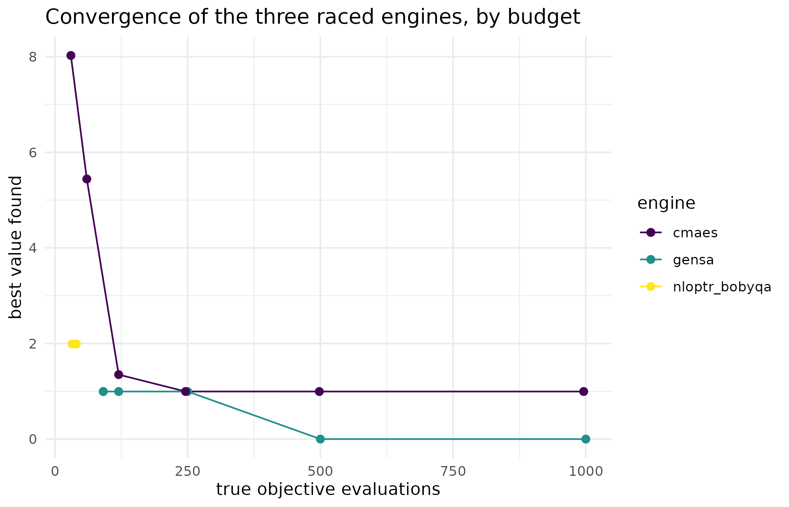

Why
An agronomist running the same nitrogen-response cost surface across
dozens of trial sites does not want to hand-pick a different optimiser
for each site, and she does not want to trust a single fixed choice
either, because no optimiser wins everywhere. Rice framed this in 1976
as the algorithm-selection problem: pick, per problem instance, the
portfolio member that will perform best. method = "auto" is
the optimix answer. It reads what the problem declares (design space,
noise, expense, budget), commits to an engine, and records the decision
in the result, so the agronomist gets one call that works out, site by
site, which optimiser to trust, and a written reason she can check.
What
.auto_select() (reached through
method = "auto", optimix’s default) runs in two tiers. Tier
1 is a transparent rule read straight off what the problem declares – no
extra evaluations spent. Tier 3 escalates to racing: a short trial for
each installed candidate engine, then the remaining budget committed to
the trial leader. Every result carries a provenance list
recording the engine that ran, why it was
chosen, and which tier decided; a raced result additionally
keeps the trial scores in provenance$race.
method = "race" reaches the same racing machinery directly,
skipping the tier-1 deliberation.
Do
The objective
The examples below use a shifted multimodal test function, a synthetic Rastrigin-style surface whose global minimum sits at 1.3 in each coordinate:
Engines available on this build
Three sections below need an optional engine each, or a pair of them:
GenSA for the noisy-objective rule and every race,
cmaes alongside it for racing specifically, and
nloptr (for nloptr_bobyqa) for the
budget-sweep figure. Each guarded chunk checks for what it needs and
prints one sentence in its place when an engine is missing.
has_gensa <- requireNamespace("GenSA", quietly = TRUE)
has_cmaes <- requireNamespace("cmaes", quietly = TRUE)
has_nloptr <- requireNamespace("nloptr", quietly = TRUE)
has_ggplot2 <- requireNamespace("ggplot2", quietly = TRUE)
race_ok <- has_gensa && has_cmaes
sweep_ok <- race_ok && has_nloptr && has_ggplot2Tier 1: the rules
When the problem’s declaration already determines a good choice,
auto applies a transparent rule and spends no evaluations
on selection. A noisy objective goes to a noise-tolerant global engine.
An expensive objective goes to Bayesian optimisation, which spends few
true evaluations. A permutation design space goes to the native
simulated annealer, described in Combinatorial optimisation and
delta evaluation. And a small budget stays with the rules, because
probing the landscape would eat too much of it. A noisy objective also
never races – ranking engines on one short noisy trial each would rank
them on luck – so its rule commits directly:
noisy_prob <- optim_problem(
fn = function(x) sum(x^2) + rnorm(1, sd = 0.05),
space = space_box(lower = c(-3, -3), upper = c(3, 3)),
objective = objective_noisy(sd = 0.05),
max_evals = 500, seed = 42
)
res_noisy <- optimix(noisy_prob)
res_noisy$provenance[c("engine", "why", "tier")]
#> $engine
#> [1] "gensa"
#>
#> $why
#> [1] "noisy objective: gensa (noise-tolerant global)"
#>
#> $tier
#> [1] 1Tier 3: racing
For a deterministic objective with an ample budget, auto
escalates from rules to evidence. It samples the landscape once with a
Latin-hypercube design, gives each installed candidate engine a short
trial from the best sampled point as a shared warm start, and commits
the remaining budget to the trial leader, warm-started from the leader’s
own best. The landscape sample and every trial evaluation are charged
against the budget, and the final run receives only what is left.
set.seed(1)
res <- optimix(shifted, lower = c(-5, -5), upper = c(5, 5))
res
#> <optimix_result>
#> optimiser : gensa
#> value : 0
#> par : 1.3, 1.3
#> evals : 2000
#> converged : yes
res$provenance[c("engine", "tier", "why")]
#> $engine
#> [1] "gensa"
#>
#> $tier
#> [1] 3
#>
#> $why
#> [1] "race 3 engines (ELA quad R2 = 0.62); gensa led the race"
res$provenance$race
#> gensa cmaes nloptr_bobyqa
#> 0.000000000 0.001694246 0.000000000The provenance is how a result explains itself: the engine that ran
(engine), why it was chosen (why), and which
tier decided (tier is 1 for a rule and 3 for a race). A
raced result also keeps the trial scores.
Asking for a race directly
method = "race" skips the deliberation and races the
installed global engines immediately. It needs a continuous box space
and at least two installed candidates:
Budgets are respected
max_evals caps the true objective evaluations – a soft
cap, since an engine may finish the internal step it is in – and the
reported count is the true total across every stage of the search. A
budget of 200 is too small for a race here (the landscape sample alone
would cost a quarter of it), so auto stays with the tier-1
rule; when the chunk below executes,
capped$counts[["function"]] sits at or just above 200,
confirming the cap was honoured rather than silently overrun:
Why the race commits to a leader
A single race, run once, shows which engine won; it does not show how
the three race candidates behave as the budget grows, which is the
reason the tier-3 rule commits the remaining budget to the
trial leader rather than splitting it evenly. The sweep below re-solves
the same shifted surface with each of gensa,
cmaes, and nloptr_bobyqa directly, at six
budgets from 30 to 1000 evaluations, and records the best value each
reaches:
sweep_budgets <- c(30L, 60L, 120L, 250L, 500L, 1000L)
sweep_engines <- c("gensa", "cmaes", "nloptr_bobyqa")
sweep_grid <- expand.grid(
engine = sweep_engines, budget = sweep_budgets, stringsAsFactors = FALSE
)
s1 <- nrow(sweep_grid)
sweep_rows <- vector("list", s1)
for (i1 in seq_len(s1)) {
prob_i <- optim_problem(
fn = shifted, space = space_box(lower = c(-5, -5), upper = c(5, 5)),
max_evals = sweep_grid$budget[i1], seed = 5
)
res_i <- optimix(prob_i, method = sweep_grid$engine[i1])
sweep_rows[[i1]] <- data.frame(
engine = sweep_grid$engine[i1], budget = sweep_grid$budget[i1],
value = res_i$value, evals = res_i$counts[["function"]]
)
} # ends i1, over the engine x budget grid
sweep_df <- do.call(rbind, sweep_rows)
sweep_df
#> engine budget value evals
#> 1 gensa 30 9.949591e-01 91
#> 2 cmaes 30 8.026175e+00 30
#> 3 nloptr_bobyqa 30 1.989918e+00 32
#> 4 gensa 60 9.949591e-01 91
#> 5 cmaes 60 5.441800e+00 60
#> 6 nloptr_bobyqa 60 1.989918e+00 40
#> 7 gensa 120 9.949591e-01 120
#> 8 cmaes 120 1.348760e+00 120
#> 9 nloptr_bobyqa 120 1.989918e+00 40
#> 10 gensa 250 9.949591e-01 250
#> 11 cmaes 250 9.954714e-01 246
#> 12 nloptr_bobyqa 250 1.989918e+00 40
#> 13 gensa 500 1.776357e-15 500
#> 14 cmaes 500 9.949591e-01 498
#> 15 nloptr_bobyqa 500 1.989918e+00 40
#> 16 gensa 1000 1.776357e-15 1000
#> 17 cmaes 1000 9.949591e-01 996
#> 18 nloptr_bobyqa 1000 1.989918e+00 40| engine | budget | value | evals |
|---|---|---|---|
| gensa | 1000 | 0.0000 | 1000 |
| cmaes | 1000 | 0.9950 | 996 |
| nloptr_bobyqa | 1000 | 1.9899 | 40 |
ggplot2::ggplot(
sweep_df, ggplot2::aes(x = evals, y = value, colour = engine)
) +
ggplot2::geom_line() +
ggplot2::geom_point(size = 2) +
ggplot2::scale_colour_viridis_d(name = "engine") +
ggplot2::labs(
x = "true objective evaluations",
y = "best value found",
title = "Convergence of the three raced engines, by budget"
) +
ggplot2::theme_minimal()
Best value found against the true evaluation budget, for the three engines the tier-3 race chooses between. nloptr_bobyqa (a local search) settles early and stops improving regardless of budget; cmaes and gensa keep improving as the budget grows, with gensa reaching the global optimum by budget 500. This is what a single race’s trial-then-commit step is racing for.
The evidence
The comparison is against zakharov,
salomon, and bohachevsky – three functions
held out from the rules auto was designed against – each
run at 3 dimensions x 6 seeds x 2 budgets (n = 54 instances per budget).
These figures come from the package’s own tier-2/tier-3 held-out
validation study and are not recomputed in this vignette. On that
held-out set auto beat the best fixed single engine
(gensa) where it matters most: at a constrained budget of
300 evaluations per dimension it solved more instances (success 0.63
against 0.56) at better median quality and lower cost. At a generous
budget of 1000 evaluations per dimension it matched the single-best
engine’s quality (an equal-or-tighter median gap) with about forty per
cent fewer evaluations, but its success rate trails single-best’s at
that budget (0.685 against 0.759) – racing spends part of the budget on
trials that a strong single global would have spent solving, which costs
a little when nearly every instance already favours that one engine. The
efficiency win is real; the generous-budget success rate is the price
paid for it.
A feature-based shortcut – route problems that look smooth to a cheap local solver – was prototyped and rejected on the same held-out evidence: one function is multimodal yet looks perfectly quadratic to a coarse sample (a bowl hiding a cosine ripple), so no feature threshold routes it safely. Racing is feature-free, resolving such cases by actually trying the engines, and that is why the escalation is a race rather than a landscape heuristic.
Read
The noisy-objective rule commits to gensa at tier 1 with
no race, matching the stated rule: a noisy objective is never raced.
On the deterministic shifted surface, the tier-3 race commits to
gensa (tier 3), reaching a value of 0 against a trial score
of 0 for that same engine’s own short trial – on this instance the short
trial alone had already located the exact optimum, so the remaining
budget confirmed rather than improved that answer – not every race needs
its commit step to do further work. The explicit race
(method = "race") reasons the same way:
explicit race of 3 engines; gensa led the race. At a budget
of 200, too small for a race, auto stays with the tier-1
rule (tier 1), and 200 evaluations were spent against that cap – at or
just above 200, confirming the budget was honoured rather than silently
overrun.
The sweep makes the reason for that commit-to-the-leader design
visible: nloptr_bobyqa stops improving once its own local
search declares convergence, spending only 32-40 true evaluations
regardless of how large a budget it is offered, and settling on a value
well short of the global optimum. cmaes and
gensa both keep using every evaluation they are given and
keep improving; gensa is the first to reach the global
optimum, at a budget of 500 evaluations. A single short trial (the
race’s own first step) could not have shown this – only a sweep across
budgets does – which is exactly why the race commits the remaining
budget to whichever engine’s short trial led, rather than trusting the
trial’s ranking to hold at every budget.
Limits
The sweep above re-solves one synthetic surface at one seed; it shows
the shape of three engines’ convergence on that instance, not a general
ranking, and the held-out study cited in The evidence is what
actually supports the claim that auto beats a fixed single
engine on average. The race itself commits on the strength of a single
short trial per candidate, which is why .auto_select()
never races a noisy objective – a single-trial ranking on noise would
rank engines on luck rather than performance, and nothing in this
vignette exercises that failure mode directly. Every example here is a
continuous box in two or three dimensions; permutation spaces route
around racing entirely, to the native annealer covered in
Combinatorial optimisation and delta evaluation.
What to read next
Getting started with optimix covers the two front doors and
the result object this vignette assumes throughout. Mapping optima
and the orchestra manifest covers goal = "map", a
different axis of the same selector, including what happens when no
installed engine can honour the request. Combinatorial optimisation
and delta evaluation covers the one design space auto
never races: permutations, routed instead to a dedicated annealer.
Reproduce
Seed 42 for the noisy-objective example, 1
for the race, 2 for the explicit race, 3 for
the budget cap, and 5 for every run in the budget
sweep.
sessionInfo()
#> R version 4.6.1 (2026-06-24)
#> Platform: x86_64-pc-linux-gnu
#> Running under: Ubuntu 24.04.5 LTS
#>
#> Matrix products: default
#> BLAS: /usr/lib/x86_64-linux-gnu/openblas-pthread/libblas.so.3
#> LAPACK: /usr/lib/x86_64-linux-gnu/openblas-pthread/libopenblasp-r0.3.26.so; LAPACK version 3.12.0
#>
#> locale:
#> [1] LC_CTYPE=C.UTF-8 LC_NUMERIC=C LC_TIME=C.UTF-8
#> [4] LC_COLLATE=C.UTF-8 LC_MONETARY=C.UTF-8 LC_MESSAGES=C.UTF-8
#> [7] LC_PAPER=C.UTF-8 LC_NAME=C LC_ADDRESS=C
#> [10] LC_TELEPHONE=C LC_MEASUREMENT=C.UTF-8 LC_IDENTIFICATION=C
#>
#> time zone: UTC
#> tzcode source: system (glibc)
#>
#> attached base packages:
#> [1] stats graphics grDevices utils datasets methods base
#>
#> other attached packages:
#> [1] optimix_0.2.0.9000
#>
#> loaded via a namespace (and not attached):
#> [1] gtable_0.3.6 jsonlite_2.0.0 compiler_4.6.1 cmaes_1.0-12
#> [5] parallel_4.6.1 dfoptim_2023.1.0 jquerylib_0.1.4 systemfonts_1.3.2
#> [9] scales_1.4.0 textshaping_1.0.5 yaml_2.3.12 fastmap_1.2.0
#> [13] ggplot2_4.0.3 R6_2.6.1 labeling_0.4.3 proxymix_0.17.0
#> [17] DEoptim_2.2-8 knitr_1.52 nloptr_2.2.1 desc_1.4.3
#> [21] bslib_0.12.0 RColorBrewer_1.1-3 rlang_1.3.0 cachem_1.1.0
#> [25] xfun_0.62 fs_2.1.0 DiceKriging_1.6.1 sass_0.4.10
#> [29] S7_0.2.2 otel_0.2.0 viridisLite_0.4.3 cli_3.6.6
#> [33] withr_3.0.3 pkgdown_2.2.1 digest_0.6.39 grid_4.6.1
#> [37] lifecycle_1.0.5 DEoptimR_1.2-2 vctrs_0.7.3 GenSA_1.1.15
#> [41] evaluate_1.0.5 glue_1.8.1 farver_2.1.2 ragg_1.5.2
#> [45] rmarkdown_2.32 tools_4.6.1 htmltools_0.5.9